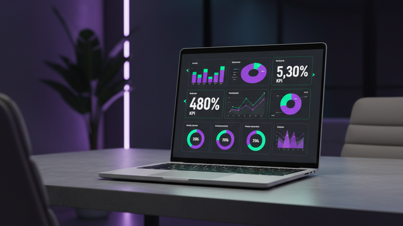

A business intelligence dashboard is a tool that collects data from multiple sources across your business and displays it in a single, visual view. Instead of logging into your analytics platform, then your CRM, then your accounting software, and then trying to piece together the picture in your head, a BI dashboard brings all of that together on one screen.
If you have ever felt like you are drowning in data but starving for insight, a BI dashboard is the answer. It takes raw numbers from the tools you already use and turns them into charts, trends, and highlighted figures that tell you exactly where your business stands.
What does a business intelligence dashboard actually do?
At its simplest, a BI dashboard does three things:
- Connects to your data sources, your website analytics, payment processor, email platform, CRM, or any other tool that generates numbers.
- Transforms raw data into visuals, charts, graphs, sparklines, and highlighted KPIs that make trends and patterns easy to spot.
- Updates automatically, so you are always looking at current information, not last week's CSV export.
The result is a single view of your business health that you can check every morning in two minutes instead of spending an hour toggling between apps.
How is a BI dashboard different from a regular dashboard?
This is a question worth answering because the terms get used interchangeably, but they are not the same thing.
A regular dashboard typically shows data from a single source. Your Google Analytics dashboard shows website traffic. Your Stripe dashboard shows payments. Your Mailchimp dashboard shows email performance. Each tool gives you a view of its own data, but you have to visit each one separately.
A business intelligence dashboard pulls from multiple sources and combines them. It answers cross-channel questions like: "How much revenue did my email campaigns generate this month?" or "Which marketing channel brought customers with the highest lifetime value?" You cannot answer those questions by looking at any single tool in isolation.
The difference is integration. A regular dashboard tells you what one tool is doing. A BI dashboard tells you what your business is doing across all of your tools.
What data does a BI dashboard pull?
The short answer: whatever data matters to your business. But most BI dashboards pull from these common categories:
Financial data
Revenue, expenses, profit margins, cash flow, and payment status. This usually comes from your accounting platform or payment processor and forms the foundation of any BI dashboard.
Marketing data
Website traffic, ad spend, conversion rates, email open and click rates, and social media engagement. This tells you whether your marketing efforts are actually generating results.
Sales data
Deals in your pipeline, close rates, average deal size, and sales cycle length. If you use a CRM, the BI dashboard pulls this data to show your sales team's performance and pipeline health.
Operational data
Depending on your business, this could include order fulfillment times, support ticket volume, appointment bookings, or project completion rates. It answers the question: "Are we delivering on what we promised?"
Customer data
New vs returning customers, customer lifetime value, churn rates, and satisfaction scores. This tells you whether you are growing sustainably or just acquiring customers who leave.
The power of a BI dashboard is not just showing this data, it is combining it. Seeing your ad spend alongside your revenue lets you calculate return on investment instantly. Seeing customer acquisition cost alongside lifetime value tells you whether your growth is profitable.
Who needs a business intelligence dashboard?
If you run a business and you make decisions based on data, or you want to, a BI dashboard is for you. Specifically, it is most valuable for:
- Business owners and founders who need a quick pulse on overall business health without digging through reports.
- Marketing teams who need to see which channels perform and where to allocate budget.
- Sales leaders who want pipeline visibility and conversion tracking in one place.
- Operations managers who need to monitor service delivery, fulfilment, or project status.
- Course creators and online businesses who sell through multiple platforms and need a unified view of revenue, traffic, and conversions.
You do not need to be a large enterprise. In fact, small businesses often benefit the most because the owner wears many hats and has the least time to hunt through multiple apps.
How to get started with a BI dashboard
You do not need to build everything at once. Here is a practical approach:
- List the five numbers you check most often. Revenue this month, website visits, conversion rate, email subscribers, support tickets, whatever your top metrics are.
- Identify where those numbers live. Which tools or platforms generate them? Are they in different apps?
- Start with those five. A dashboard with five well-chosen metrics is infinitely more useful than one with fifty metrics you never look at.
- Choose your tool. Off-the-shelf tools like Looker Studio or Databox work for simple setups. For anything involving multiple data sources or custom calculations, a custom-built dashboard gives you more flexibility.
- Refine over time. After a month, ask yourself: what questions am I still opening other apps to answer? Add those to your dashboard and remove anything you never look at.
Not sure where to start?
Look at your business intelligence options for small business and see what fits your budget and needs. Even a simple setup beats no setup at all.
The bottom line
A business intelligence dashboard is not about fancy technology or enterprise budgets. It is about seeing your business clearly so you can make better decisions. The fewer apps you have to log into, the faster you spot problems and the quicker you act on opportunities.
If you are ready to move from scattered spreadsheets and app-hopping to a single view of your business, get in touch. We build custom BI dashboards connected to your actual data, designed around what you need to see, nothing more.
Frequently asked questions
What is a business intelligence dashboard?
A business intelligence dashboard is a single screen that pulls data from multiple tools and displays it as charts, KPIs, and trends. It combines information from your website analytics, CRM, payment processor, and other platforms so you can see how your business is performing without logging into each app separately.
How is a BI dashboard different from Google Analytics?
Google Analytics shows website data only. A BI dashboard combines data from multiple sources, your website, CRM, email platform, and accounting tools, into one view. This lets you answer cross-channel questions like "Which marketing channel brought the most profitable customers?" that no single tool can answer alone.
Do I need technical skills to use a BI dashboard?
No. A well-designed BI dashboard is built for business users, not developers. You look at charts and numbers, not code. The technical work happens during setup, connecting data sources and designing the layout, and after that, you simply use it.
How much does a BI dashboard cost?
It depends on the approach. Free tools like Google Looker Studio can handle simple dashboards. Paid tools like Databox or Klipfolio start at around $50-100 per month. Custom-built dashboards have a higher upfront cost but give you exactly what you need without ongoing subscription fees or platform limitations.
What is the first metric to put on a BI dashboard?
Revenue. It is the single number that tells you most about your business health. Start with revenue (broken down by month, quarter, and year-over-year comparison), then add the metrics that drive revenue: traffic, conversion rates, and customer acquisition cost.